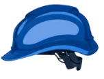
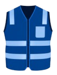
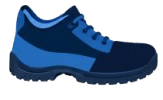
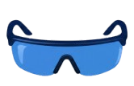

Capacete
Protege a cabeça contra impactos, quedas de objetos e possíveis acidentes. É essencial em ambientes de construção, indústrias e locais com riscos de impacto.
Máscara
Protege as vias respiratórias contra poeiras, fumaças, gases e partículas prejudiciais à saúde, evitando a inalação de substâncias perigosas.

Colete de segurança
Aumenta a visibilidade do trabalhador por meio de faixas refletivas, ajudando a prevenir acidentes em locais com veículos, máquinas e pouca iluminação.

Bota de segurança
Protege os pés contra quedas de objetos, perfurações, escorregões e contato com substâncias perigosas.
Kit de primeiros socorros
Permite prestar os cuidados iniciais em situações de emergência, auxiliando no atendimento de pequenos ferimentos até a chegada de profissionais de saúde.
Abafador de ruído
Reduz a exposição a ruídos elevados, protegendo a audição e ajudando a prevenir problemas auditivos causados pelo barulho excessivo.

Óculos de proteção
Protegem os olhos contra poeira, partículas, respingos químicos e outros materiais que podem causar lesões durante o trabalho.
Luvas
Protegem as mãos contra cortes, queimaduras, produtos químicos, abrasões e outros riscos, conforme o tipo de luva utilizado.
Jaleco
Funciona como uma barreira de proteção para o corpo e as roupas, evitando o contato direto com sujeiras, respingos e determinadas substâncias presentes no ambiente de trabalho.
Como usar o app:
- Selecione o arquivo csv da turma para carregar a tabela
- Clique no botão da tarefa que será realizada
- Marque caso o aluno esteja com o EPI
- Assim que terminar clique em encerrar atividade e os dados serão salvos na tabela
Alunos